Base action from residual RL
A frozen imitation-learning policy provides a stable action prior, while a lightweight residual policy learns real-time corrections.
Real-World Reinforcement Learning · Contact-Rich Manipulation
FTC first focuses the robot on key contact regions, then learns precise force-aware interaction through human-in-the-loop residual reinforcement learning.
Overview
Real-world RL can master contact-rich manipulation, but physical interaction is expensive and sparse rewards make exploration inefficient. FTC reduces meaningless trial-and-error by combining an IL base policy, residual RL, keyframe-based affordance guidance, and human intervention designed for cluttered scenes.
A frozen imitation-learning policy provides a stable action prior, while a lightweight residual policy learns real-time corrections.
Goal keyframes from demonstrations provide dense visual guidance, helping the robot focus on regions that matter for task completion.
Expert interventions are integrated through a timed intervention window to avoid conflict with RL while preserving safety.

Method Overview
Encode the current wrist-camera observation and the goal keyframe, then shape dense rewards using their embedding distance.
The action is formed by combining a base policy action with a residual policy trained online using SAC-style optimization.
Dual wrist cameras and force feedback support fine-grained contact-rich control under pose variation and clutter.
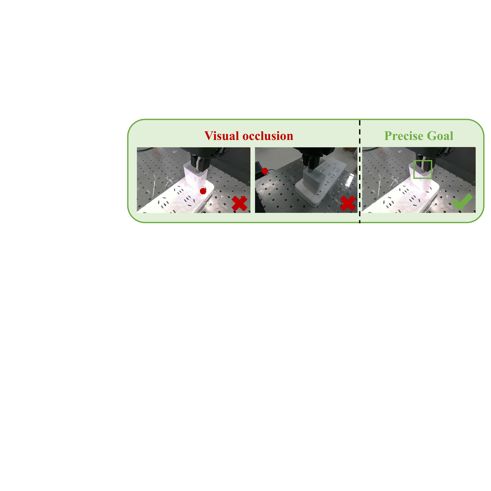
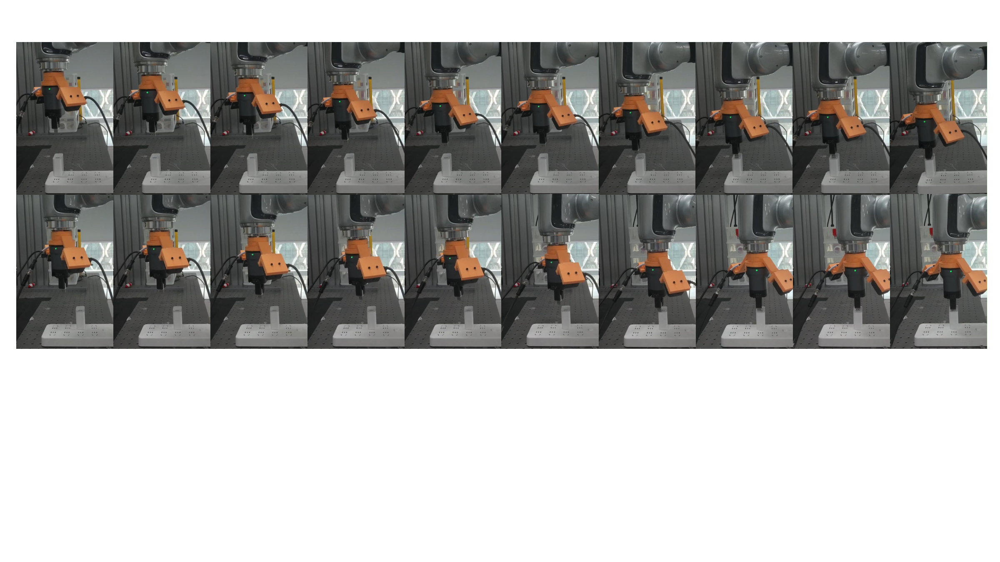
Real-World Demos
All videos below are click-to-play demos from the FTC video repository. The layout follows the WholeBodyVLA-style project page pattern: large title, concise captions, and grid-based demonstrations.
Hanging keychain
Opening door
Charger grasp-insertion
Toy insertion
USB insertion: easy
USB insertion: hard
Training Process
The original FTC demo page records complete training processes: USB hard insertion converges in about 45 minutes, while keychain hanging takes about 20 minutes.
USB hard training
Keychain training
Robustness & OOD Generalization
FTC evaluates pose changes, visual disturbances, and out-of-distribution positions. The USB OOD case shows generalization from four trained positions to eight test positions.
USB OOD case 1
USB OOD case 2
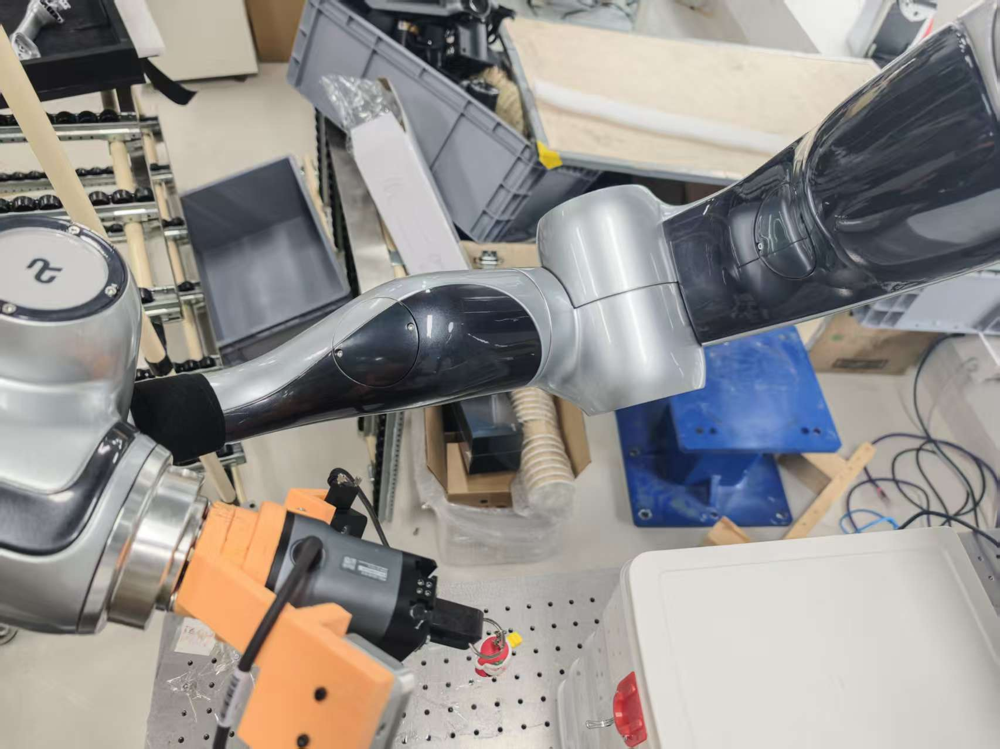
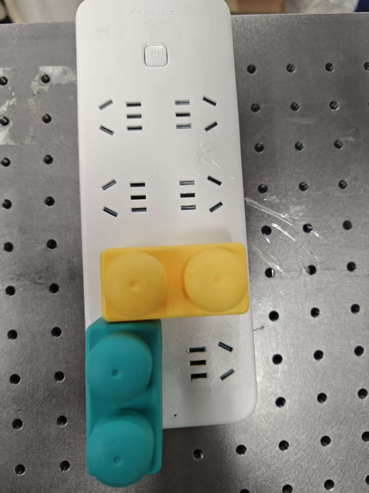
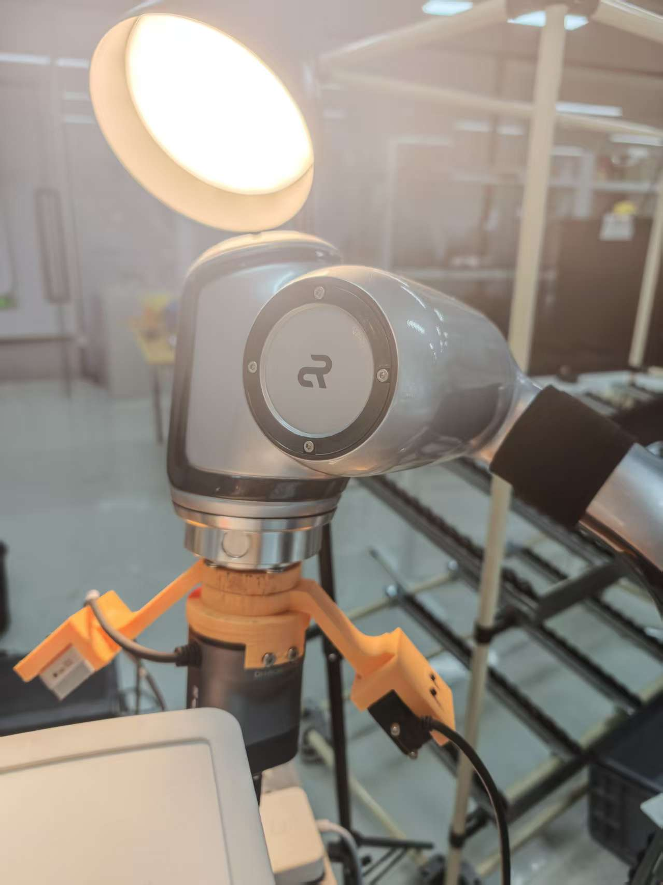
Learning Curves
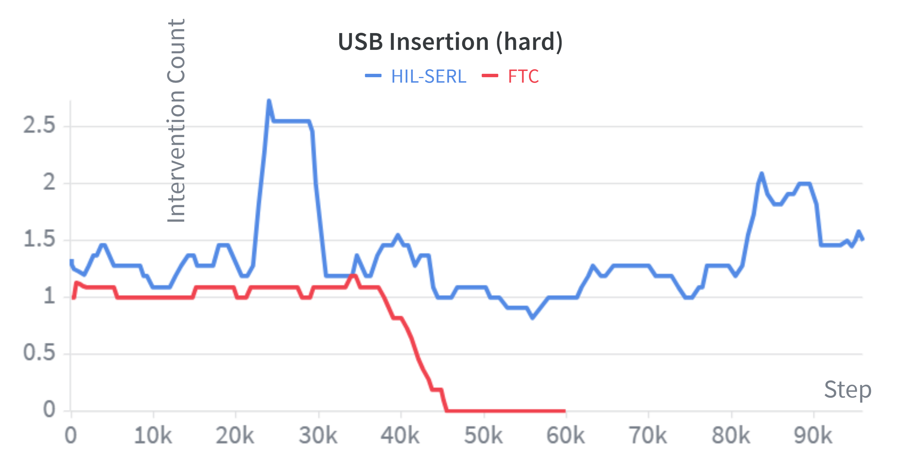
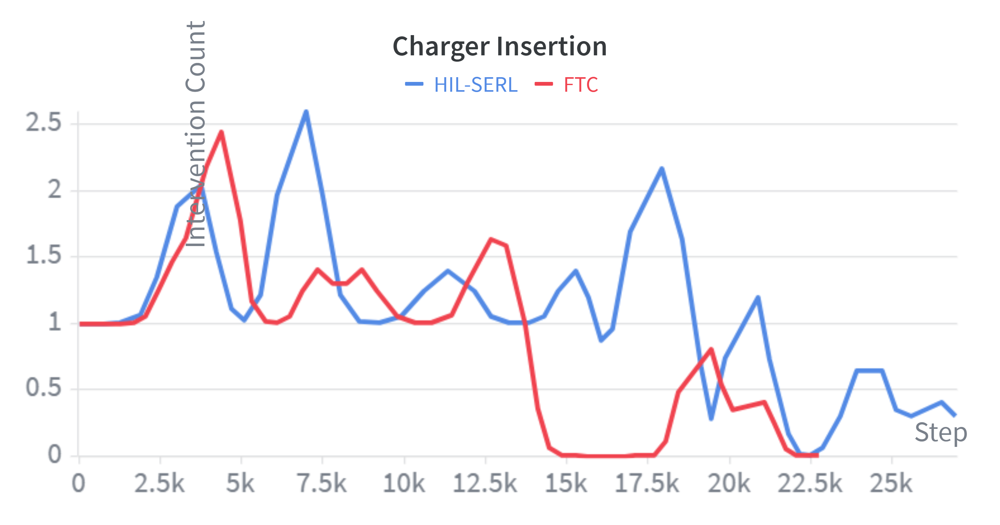
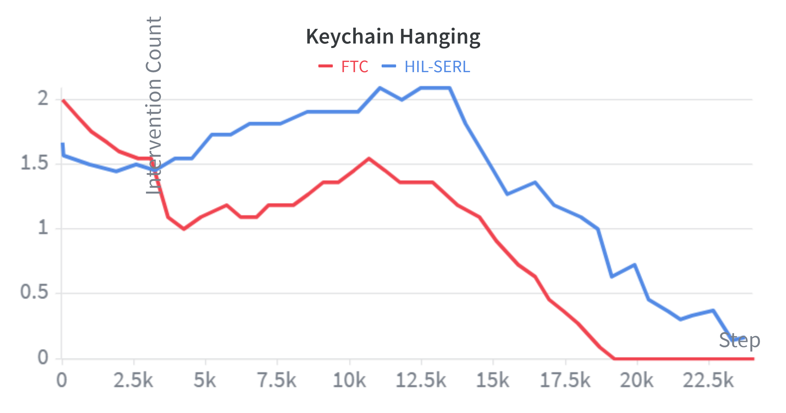
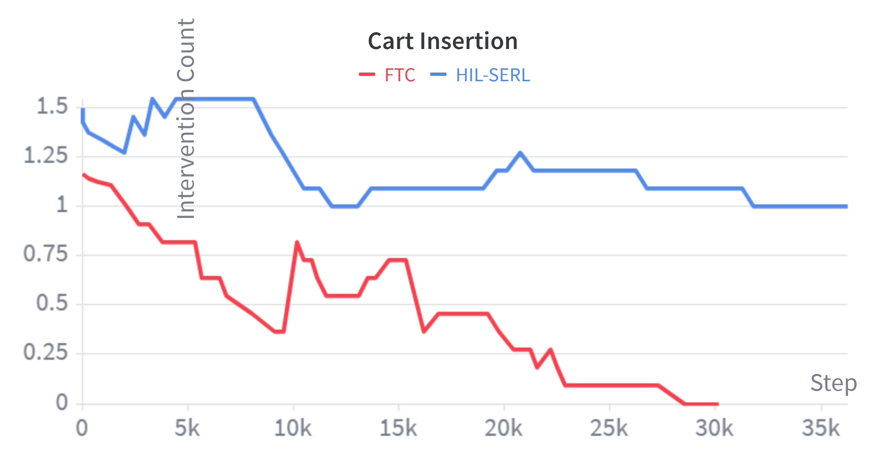
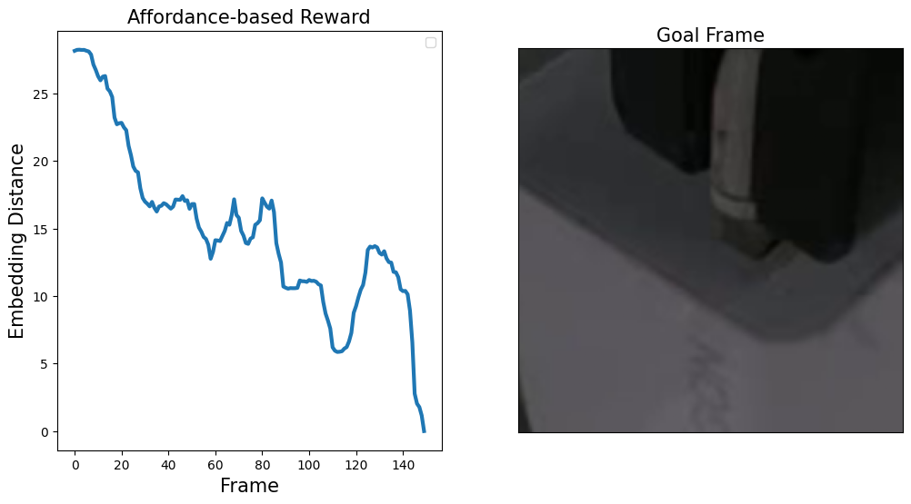
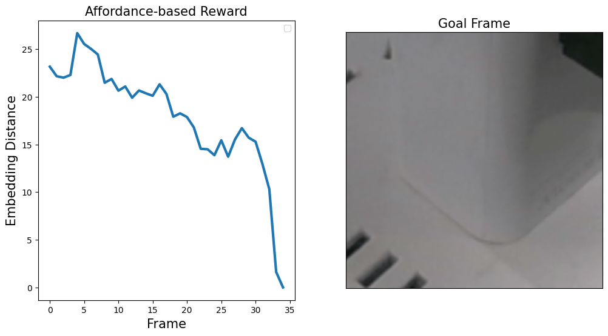
Task Gallery
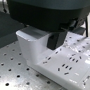
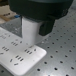
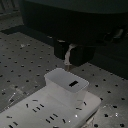
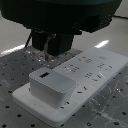
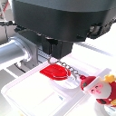
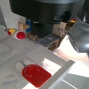
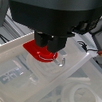
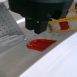
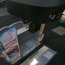
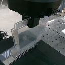
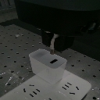
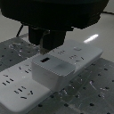